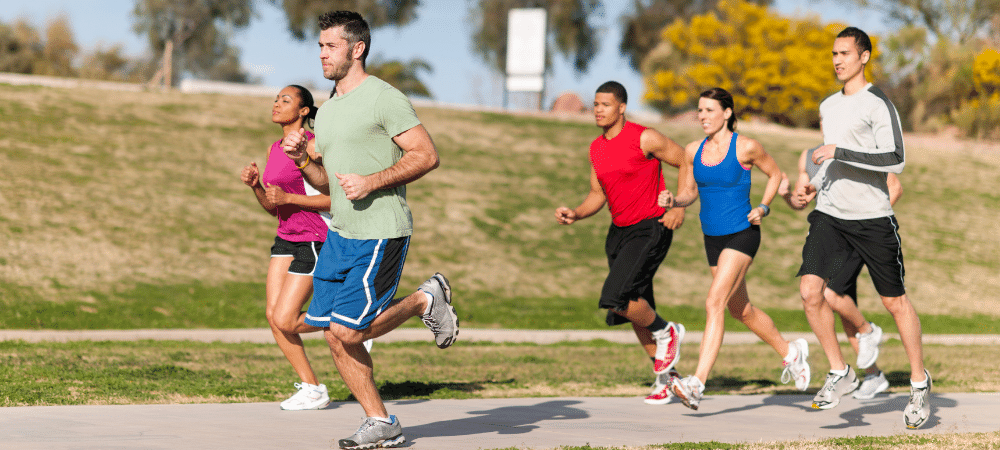
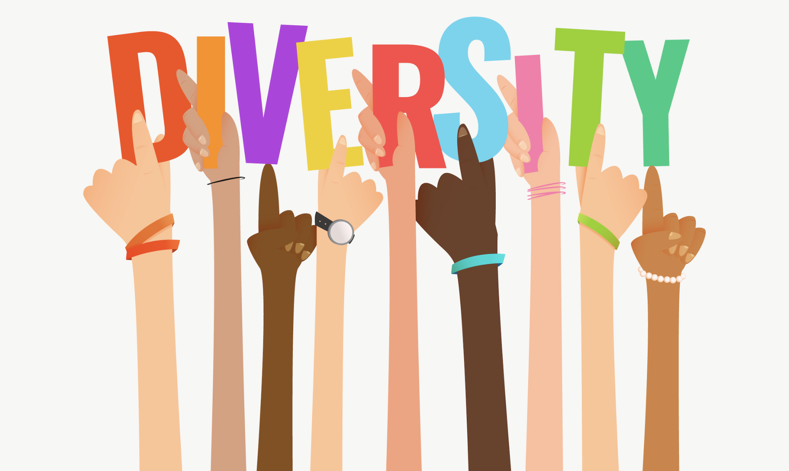

//full p5
//Develop HTML page named as “newpaper.html” having variety of HTML semantic elements with
background colors, text-colors & size for figure, table, aside, section, article, header, footer… etc.
Newspaper
The Role of Sports in Society
Physical Health
The promotion of physical health is perhaps the most direct benefit of sports.
Regular participation in sports activities reduces the risk of chronic diseases,
enhances cardiovascular health, and improves mental well-being. Communities often
promote sports as a means to foster healthier lifestyles among children and adults alike,
creating programs that encourage physical activity from a young age.

Physical
Cultural Identity
Many sports are deeply embedded in national and local identities. For example,
soccer in Brazil and cricket in India are not just games; they are cultural
phenomena that represent the spirit and history of their nations. Traditional
sports, such as hurling in Ireland or sumo wrestling in Japan, carry significant
cultural heritage, serving as a source of pride and tradition.

Identity
Economic Impact
The sports industry is a massive economic driver. Professional leagues and events generate
billions of dollars annually through ticket sales, broadcasting rights, and merchandise.
Cities often invest heavily in sports infrastructure—such as stadiums and training
facilities—not just for the teams, but to stimulate local economies and create jobs.
Major events, like the Super Bowl or the Olympics, can significantly boost tourism and local business.
Impact